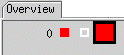

Detailed error map
The data of the detailed error map are displayed in the Cycles and Edges tabs of the Error Map Tool as a matrix of cells.
You can locate the detailed error map within the test processor (which is the default) or in the external memory. For detailed information, see Result Mode. The following description assumes the default.
The detailed error map is focused by selecting a cell in the Overview tab and executing a test, via the Execute button. The cell that the detailed error map is focused on is enlarged.

All cycles or failures (depending on the Acquisition Modes) of subsequent cells will be used to fill the 8K memory of the detailed error map. The data within the detailed error map are displayed in the Overview tab as normal cells. The cells which are not included in the detailed error map will be decreased in size.
Problems
Under the following conditions you may not be able to find errors in the cycles/edges folder:
- Your test has a large number of cycles so that the block size in the overview folder is larger than 2k.
- The acquisition mode is set to Force Cycle Oriented Mode.
To solve the problem you have two options:
- Use extended memory, see section Location of the detailed error map in Result Mode
- On the Result menu, set Acquisition mode to Force Failure Oriented
Functional changes
- Introduced before SmarTest 6.3.2
- SmarTest 7.1.2: Bandwidth related settings introduced